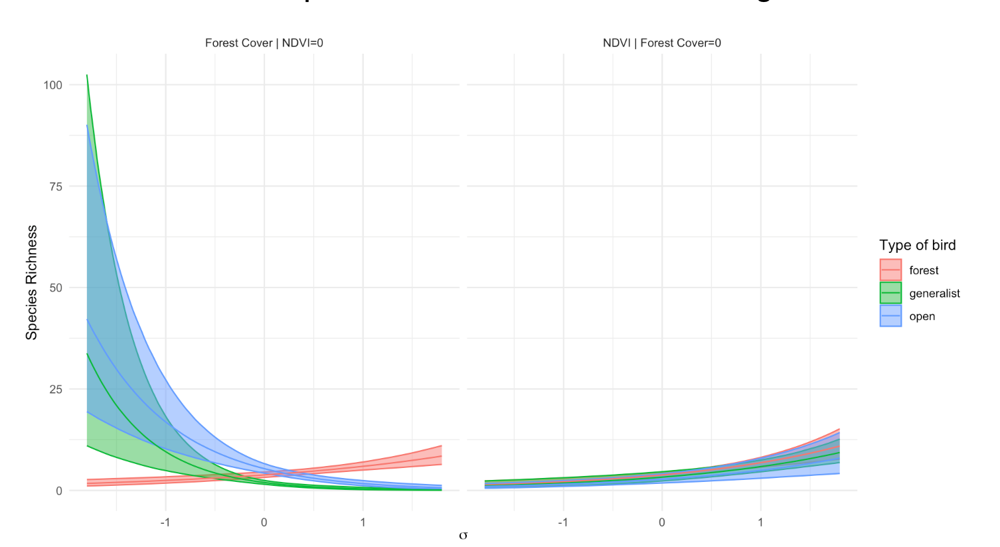

Multiple regression
M. Talluto
15.12.2023
Multiple linear regression model
Multiple metric continuous independent predictors are used to predict
one metric response variable.
Model formulation: linear combination of k predictors: \[
\mathbb{E}(y) =\beta_0+\beta_1X_1+\beta_2X_2+...+\beta_kX_k
\]
- \(\beta_0\) is the intercept
- \(\beta_1...\beta_k\) are
partial regression coefficients for \(X_1...X_k\)
- The change in \(\mathbb{E}(y)\) per
unit change in an \(X_j\) holding all
other \(X\)-variables constant
- \(\beta_0...\beta_k\) are estimated
by \(b_0...b_k\) from the sample.
Multiple linear regression model
Using matrix notation:
\[
\hat{y} = \mathbf{X}\mathbf{B}
\]
\(\mathbf{B}\) is the
parameter vector
\(\mathbf{X}\) is the design
matrix
\[
\mathbf{X} = \begin{bmatrix}
1 & x_{1,1} & x_{2,1} & \dots & x_{k,1} \\
1 & x_{1,2} & x_{2,2} & \dots & x_{k,2} \\
\vdots & \vdots & \vdots & \dots & \vdots \\
1 & x_{1,n} & x_{2,n} & \dots & x_{k,n} \\
\end{bmatrix}
\]
\[
\begin{aligned}
\mathbb{E}(y) = \hat{y} & = \mathbf{X}\mathbf{B} \\
y &= \mathbf{X}\mathbf{B} + \epsilon \\
\epsilon & \sim \mathcal{N}(0, s_\epsilon)
\end{aligned}
\]
The equation is a linear system and can be solved
with linear algebra by OLS, minimizing the sum of squared residuals:
\[
\mathrm{min}: \sum \epsilon^2 = \sum \left (\mathbf{X}\mathbf{B} - y
\right)^2
\]
Multiple linear regression: Hypotheses
- \(\mathbf{H_{0,regression}}\):
All partial regression coefficients are zero.
- The model (i.e., the linear system \(\mathbf{XB}\)) does not explain any of the
variation in \(y\).
- Test with ANOVA as with linear regression against a null model (with
no predictors).
Multiple linear regression: Hypotheses
- \(\mathbf{H_{0,regression}}\):
All partial regression coefficients are zero.
- The model (i.e., the linear system \(\mathbf{XB}\)) does not explain any of the
variation in \(y\).
- Test with ANOVA as with linear regression against a null model (with
no predictors).
- \(\mathbf{H_{0,coef_j}}\):
An individual partial regression coefficient, the slope of the
relationship between \(y\) and \(x_j\), is zero.
- with \(k\) predictors, there are
\(k\) such hypotheses.
- test with a \(t\)-statistic
Multiple linear regression: Goodness of fit
- Explained variance: multiple \(R^2\)
- Similar interpretation as with simple LR: the percentage of
variation of Y explained by all X variables.
Multiple linear regression: Goodness of fit
- Explained variance: multiple \(R^2\)
- Similar interpretatin as with simple LR: the percentage of variation
of Y explained by all X variables.
BUT: adding predictors (even random numbers) will always increase
\(R^2\) (by making the model more
flexible)
One solution is Adjusted \(R^2\): penalises \(R^2\) for additional model complexity.
\[
{R^2}_{adj}=1-\frac{SS_{res}}{SS_{tot}}\times\frac{n-1}{n-k}
\]
Choosing predictors
Simplest approach: fit a full model with all predictors, then drop
anything that is non-significant
Choosing predictors
Simplest approach: fit a full model with all predictors, then drop
anything that is non-significant
Caveats:
- Predictors may represent important hypotheses
- Predictors can influence other predictors!
- \(x_2\) is significant only if
\(x_1\) is in the model, but \(x_1\) is never significant
- Interactions must include all main effects:
- \(\mathbb{E}(y) = b_0 + b_1x_1 + b_2x_2 +
b_3x_1x_2\)
- A model with \(b_3\) must include
\(b_1\) and \(b_2\), even if non-significant!
- High-order terms (e.g., polynomials) must also include all
lower-order terms
- \(\mathbb{E}(y) = b_0 + b_1x_1 +
b_2x_1^2\)
- A model with \(b_2\) must include
\(b_1\)
Comparing effects
Do not compare p-values to determine which predictor is “better”
Rather, compare standardized effects
Either standardize all predictors (especially if \(s_{x_1} >> s_{x_2}\)) or standardize
the coefficients.
\[
{b_j}^*=b_j\frac{s_{X_j}}{s_Y}
\]
Higher \({b_j}^*\) means stronger
influence of \(x_j\). Note that in
software output \({b_j}^*\) is often
referred to as \(\beta_j\).
Model building
- Stepwise model selection, implemented
step in R will
build a model for you automatically, adding or dropping terms in an
attempt to find a model that minimises AIC
- This is an ok approach for exploration but not for
hypothesis testing
- p-values resulting from such a model are not useful
- We should view such models as hypotheses to be explored with further
data collection
- Unwise to speak of significance
Model building
- Stepwise model selection, implemented
step in R will
build a model for you automatically, adding or dropping terms in an
attempt to find a model that minimises AIC
- This is an ok approach for exploration but not for
hypothesis testing
- p-values resulting from such a model are not useful
- We should view such models as hypotheses to be explored with further
data collection
- Unwise to speak of significance
Such models are prone to Overfitting:” irrelevant
predictors that correlate with the outcomes by chance result in a model
that fits the dataset well, but performs poorly when challenged with new
data (low transferability)
Pitfalls: Model flexibility
hom = data.frame(
body_mass_kg = c(34.5, 35.5, 37, 41.5, 55.4, 53.4, 60.9),
brain_volume_cc = c(652.4, 464.5, 448.8, 549.3, 819.9, 1540.4, 963.2)
)
mod1 = lm(brain_volume_cc ~ body_mass_kg, data = hom)
Pitfalls: Model flexibility
mod1 = lm(brain_volume_cc ~ body_mass_kg, data = hom)
mod2 = lm(brain_volume_cc ~ body_mass_kg + I(body_mass_kg^2), data = hom)
Pitfalls: Model flexibility
mod1 = lm(brain_volume_cc ~ body_mass_kg, data = hom)
mod2 = lm(brain_volume_cc ~ body_mass_kg + I(body_mass_kg^2), data = hom)
mod3 = lm(brain_volume_cc ~ body_mass_kg + I(body_mass_kg^2) + I(body_mass_kg^3), data = hom)
mod4 = lm(brain_volume_cc ~ body_mass_kg + I(body_mass_kg^2) + I(body_mass_kg^3) + I(body_mass_kg^4), data = hom)
mod5 = lm(brain_volume_cc ~ body_mass_kg + I(body_mass_kg^2) + I(body_mass_kg^3) + I(body_mass_kg^4) + I(body_mass_kg^5), data = hom)
mod6 = lm(brain_volume_cc ~ body_mass_kg + I(body_mass_kg^2) + I(body_mass_kg^3) + I(body_mass_kg^4) + I(body_mass_kg^5) + I(body_mass_kg^6), data = hom)
The curse of dimensionality
- High dimensional spaces (lots of \(x\) variables) require lots of data
- Rule-of-thumb minimum: \(n >
5k\)
- with large \(k\), even more is
needed (as the necessary n to cover multidimensional space increases as
a power law of k).
Assume predictors \(X_1\) and \(X_2\) and limited sampling effort of
n=16:
- When studying only one predictor, we can cover its entire range of
interest well.
- When studying two predictors with the same effort, our samples are
dispersed in the 2D-space. We can´t get the same density but still cover
the entire 2D-space in a regular grid.
- The more likely reality produces a dispersed distribution over the
2D-space with well and less well covered areas. The data becomes
sparse. Maintaining high sampling density becomes
increasingly difficult when more than two 2 dimensions are involved. We
don´t cover our predictors well enough anymore!

Additional assumptions
- All \(X_j\) measured with
no/minimal error
- Linearity between \(Y\) and \(BX\), in other words linear relationships
are assumed between \(Y\) and every
\(X_j\) adjusted for all other \(X\)-variables (hard to check!)
- Normally distributed residuals with constant variance
- use
qqnorm(residuals(mod)),
qqline(residuals(mod)), and plot(mod)
- plot \(|res|\) or \(res^2\) against \(\hat{Y}\) to detect variance heterogeneity
(no trend!)
- examine residuals for high leverage/influence
- Limited multicollinearity
- quick test: run
cor on predictor matrix, check for
large correlations
- formal test: Variance Inflation Factors (VIF) < 10 (ish)
Dealing with multicollinearity
Why is this a problem?
- Numerical instability (hard to find parameter estimates)
- large CIs for regression slopes
- unsure importance of predictors (but could still be good overall
model).
Variance inflation factors
Ignoring \(y\) for a moment, we can
perform regressions of the \(x\)
variables against each other:
\[
x_i = b_0 + b_1x_1 \dots b_kx_k +\epsilon \mathrm{~;~excluding~x_i}
\]
Large \(R^2_i\) would argue for
redundancy of \(x_i\) (its information
is already contained in a linear combination of all other \(x\)-variables).
\(VIF_i\) is a transformation of
\(R^2_i\):
\[
\mathrm{VIF}_i = \frac{1}{1-R^2_i}
\] The VIF (name!) tells you by how much the SE of a regression
coefficient increases due to inclusion of additional \(x\)-variables:
\[
s_b = s_{b,\rho=0}\sqrt{\mathrm{VIF}}
\]
\(s_{b,\rho=0}\) is the standard
error of a regression coefficient, assuming that all predictors are
uncorrolated
VIF in R
# install.packages(car) # install the package, only need to do this once!
library(car)
## Loading required package: carData
full_mod = lm(bill_length_mm ~ bill_depth_mm + flipper_length_mm +
body_mass_g + sex, data = penguins)
vif(full_mod)
## bill_depth_mm flipper_length_mm body_mass_g sex
## 2.879923 2.438040 3.440571 3.481219
Procedure: if any VIF > 10, drop the variable with the largest
VIF, repeat
Presenting Results
Always:
- A complete description of the model, all variables, and whatever
variable selection method
- A table of regression parameters, std errors or confidence
intervals, p-values
- \(R^2\) or another metric of
goodness of fit
Presenting Results
Graphical options
- Scatterplot-like representations not possible for >2
predictors
- Diagnostics (qq-plots, residulas vs fits) are even more
important!
- Partial response curves: effect of each variable,
holding others constant
